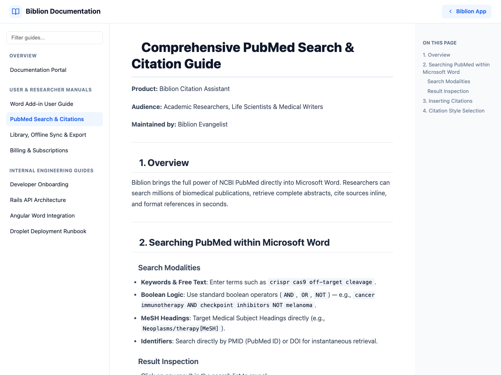
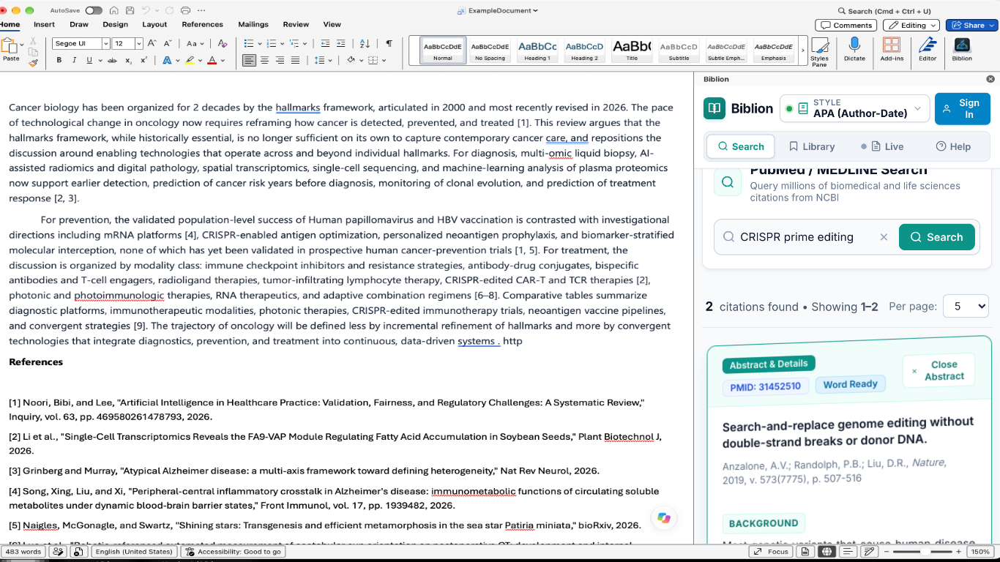

#Searching PubMed & Citing Articles
Product: Biblion Citation Assistant
Audience: Academic Researchers, Life Scientists & Medical Writers
Maintained by: Documentation Writer
#1. What It Does and Why It Helps
Biblion's PubMed / MEDLINE Search lets you search the National Library of Medicine's biomedical literature from the Biblion taskpane in Word or from any browser. You read abstracts, then cite or save a paper without switching windows, so you stay focused on writing.

#2. Run a Search
- Open the Search page. It is the home page of Biblion.
- Type your terms in the search box, for example
CRISPR prime editing. The search button becomes active once you have typed something. - Press the search button.
- Biblion shows how many records were found and lists article cards, with paging to move through longer result sets.
Handy features
- Example queries: clickable suggestions below the search box. One click fills the box and runs the search. A good way to try Biblion.
- Clear button (×) appears while you type and empties the box.
- PubMed syntax works: use
AND,OR,NOT, quotes and field tags such as[MeSH Terms]or[Title/Abstract]. - Not sure how to write a query? Use the AI Query Rewriter.
#If something goes wrong
| You see | Meaning | What to do |
|---|---|---|
| No PubMed records found | Zero matches | Simplify or broaden your terms |
| Search Request Failed | NCBI could not be reached or errored | Click Retry |
#3. Read an Article Card
Each card shows the PMID, title, authors, journal, year and DOI link.
To read the abstract, click the Abstract (info) button on the card. The card flips over to show the full abstract. Click the close button to flip back. Your place in the results is not lost.

#4. Cite or Save
The buttons on each card depend on where you run Biblion:
| Button | Where | What it does |
|---|---|---|
| Insert Citation | Microsoft Word | Inserts an in-text citation at your cursor and adds the reference to the References section. Shows Citation inserted. See Citation Styles. |
| Copy Citation | Web browser | Copies citation and reference to the clipboard. Shows Copied! briefly. |
| Save to Library | Both | Adds the article to My Library. Changes to Saved in Library; click again to remove. |
The number badge next to My Library in the navigation shows how many articles you have saved.
#5. Typical Workflow
- Search a topic and skim titles.
- Flip cards to read abstracts.
- Save to Library the papers you want to keep.
- In Word, put your cursor in the manuscript and click Insert Citation.
- Switch citation style any time. Biblion reformats everything. See Citation Styles.
- Use Live References to check what a sentence cites.
Related: Using Biblion in a Web Browser